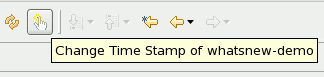

Last revised November 7, 2007
This is the template for the "What's new" document that accompanies each JBoss Tools release. (roughly based on the template from Eclipse News and Noteworthy)
JBoss Tools element |
|
|
Item title, in bold, no trailing punctuation, with named anchor |
A quick paragraph about changes since the last release of JBoss Tools/RHDS. Tell end users about changes they'll see at the UI. Tell component writers about changes they'll see at the client- and server-side APIs. Try to generate some excitement; save the boring details for the manual. The description should be complete sentences, with trailing punctuation. Stick to the default font and size. If a small image sheds light, place it below the description, in a separate paragraph. Regular screen snapshots should be done on Windows or Linux. Crop out any extraneous stuff to focus the reader's attention on your new feature. The image should be no more than 466 pixels wide and in PNG-24 format (as opposed to GIF, TIF, BMP, or JPG).  Name the file is a way that is appropriate and specific to the item (e.g., key-bindings.png, rather than something generic like image.png). Use all lowercase letters in the image file name, including the ".png" file extension. As a separator, use hyphen "-" rather than underscore "_". Put all the images in a sibling directory named "images". This gives HTML like <img src="images/foo.png" alt="The Foo View" />. Include a suitable alt property (which is mandatory in XHTML 1.0). Do not embed the width and height of the image. The images should be left justified (as opposed to centered). Use the W3C XHTML Markup Validation Service to check your document's markup before submitting. |
| Another item | Another blurb |
| Another item | Another blurb |